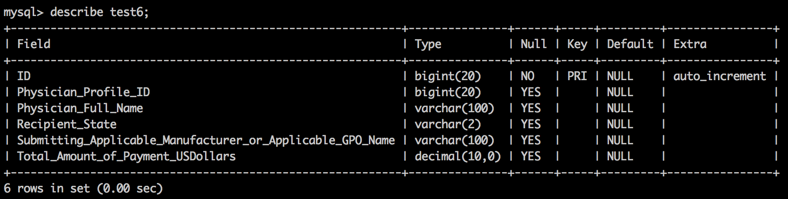

CMS_Explorer
Index
1. Introduction
CMS_Explorer is an analysis platform for research into financial relationships between physicians and the pharmaceutical industry. It is a data platform that is built on MySQL, Flask and Python; run on 1 AWS T2micro with Linux Ubuntu.
2. Data Preperation
- Send Medicare/Medicaid raw CMS file (CSV format) to EC2 MySQL/web-host: OP_DTL_RSRCH_PGYR2014_P06302015.csv
- Via scp copying: scp -o "StrictHostKeyChecking no" -i ~/.ssh/my-personal-key.pem ~/Desktop/OP_DTL_RSRCH_PGYR2014_P06302015.csv ubuntu@ec2-52-89-150-150.us-west-2.compute.amazonaws.com:~/cms_explorer
- Change the permissions so it can be opened by mysql: chmod o+rx OP_DTL_RSRCH_PGYR2014_P06302015.csv
- Make database: create databse grand_rounds;use grand_rounds
- Clone into github repo: git clone https://github.com/mrubash1/cms_explorer
- The following table is created by cms_explorer.py in the prepare_mysql_database folder
- CREATE TABLE IF NOT EXISTS test ( ID BIGINT AUTO_INCREMENT NOT NULL, Physician_Profile_ID BIGINT, Physician_Full_Name VARCHAR(100), Recipient_State VARCHAR(2), Submitting_Applicable_Manufacturer_or_Applicable_GPO_Name VARCHAR(100), Total_Amount_of_Payment_USDollars DECIMAL, PRIMARY KEY (ID) );

-
ETL functions to load the data from the csv into table 6, keeping relevant columns only: *Declare how the csv is formatted via: |fields terminated by ',' optionally enclosed by '"' lines terminated by '\n' '| *Ignore the first line as we already constructed the header above *For all columns that we are not keeping, use @ignore: *|ignore 1 lines( @ignore, @ignore, @ignore, @ignore, Physician_Profile_ID, @var2, @var3, @var4, @var1, @ignore| ...
Query data by grouping doctors, and/or state and company by user request (default= 'All')
- Importantly, doctors are identified by Physician_Profile_ID to avoid duplicate names
- Additionally, some required data munging includes eliminating any entries that do not have the doctors name |HAVING Physician_Full_Name <> ' '|
- Example query and results below: |SELECT Physician_Full_Name AS Physician, SUM(Total_Amount_of_Payment_USDollars) AS Received_the_following_money, count(Total_Amount_of_Payment_USDollars) AS In_this_many_payments, Submitting_Applicable_Manufacturer_or_Applicable_GPO_Name AS From_this_company, Recipient_State AS In_the_state_of FROM test6 WHERE Physician_Full_Name <> ' ' AND Submitting_Applicable_Manufacturer_or_Applicable_GPO_Name = 'Genentech, Inc.' AND Recipient_State = 'CA' GROUP BY Physician_Profile_ID, Recipient_State, Submitting_Applicable_Manufacturer_or_Applicable_GPO_Name ORDER BY SUM(Total_Amount_of_Payment_USDollars) DESC LIMIT 20;|
3. Flask Web Application
- The Flask application is written in python allowing querying of the MySQL database via custom connectors
- Flask also enables dynamic loading of data and results into html tables
- Scripts and templates can be found in the Flask folder
- Example data results below
4. Future Directions
- Linking this dataset with other measures of physician quality including insurance claims data and patient medicare claims data
- Enable physician search functionality so individuals can examine the industry ties of their current or future potential physician
- In the future, this platform could be implemented with the NoSQL database Cassandra
- Cassandra would enable rapid scaling to a distributed system format, with increased ability for concurrent writes (new data, user interactions), as well as concurrent reads (user based queries)
- Cassandra clusters are more reliable then traditional MySQL sharding strategies
- Additionally, with an informed partitioning strategy for physician and company based queries, key-value looks up could be increased in speed compared to MySQL (via column store disk storage)
- This strategy would be as follows
- Partition Key: Physician_Custom_ID
- Clustering Column: Company
- Unclustered column: State (with the drawback that joins across state based queries would be siginificantly slower)
- However there are drawbacks to Cassandra including
- Reduced flexibility in queries
- Difficulty in adding or removing a column
- Potential lack of consistency if a node goes down CAP Theorem
- Alternative distributed system databases that could also be implemented include ElasticSearch for text searching via a reverse index strategy, or Amazon Redshift for increased consistency in a distributed system.